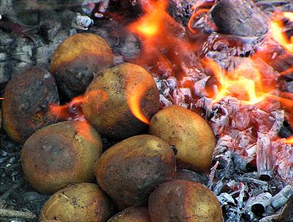
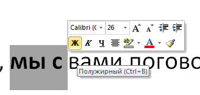

Неделя костров
Белорусы любят отмечать Пачатак кастрычніка или, как его называют в России, Неделю костров. В чем же соль, то есть, картошка праздника?
Кратко
- Другие названия: Праздник начала октября
- Дата празднования: первая неделя октября
- Место: Белоруссия
- Символ: большой и жаркий костер
История
Костры на Земле начали разводить еще с момента открытия огня. В народных верованиях костер был непременным атрибутом легендарного праздника Ивана Купалы, отмечавшегося в середине лета, 7 июля. Неделя костров же выпадает на октябрь.
Истоком праздника послужило осеннее развлечение в белорусских деревнях. Первые массовые розжиги костров в первую неделю октября происходили еще в шестидесятые годы XX века. И детям, и взрослым очень нравились посиделки у костра, так что традиция дошла до наших дней.
А еще хотелось бы выделить интересный факт из происхождения названия Недели костров. Дело в том, что по-белорусски "октябрь" — "кастрычнік". Русское ухо слышит слово "костер", из-за чего русское название праздника разошлось с дословным переводом оригинала.
Как отмечать?
Лучше всего это делать в сельской местности: там нет искусственного освещения, да и люди мешать не будут. Поздним вечером нужно собрать топливо для костра, сложить их в горку — чем больше, тем лучше — и запалить с помощью бересты. Все, остается только поддерживать огонь.
Что можно делать? Да все, что душа пожелает! Можно петь песни (хорошо, если белорусские), запекать картошку, прыгать через него, жарить хлеб и многое-многое. Самое важное в этом празднике — возможность побыть вместе с семьей и насладиться теплом костра перед приближающейся зимой.
Другие статьи
 |
На заглавную |
 |
Сахарная головаОпубликовано 24 апреля 2020 года |
День жирного пробелаОпубликовано 1 мая 2020 года |